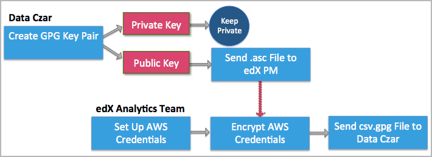
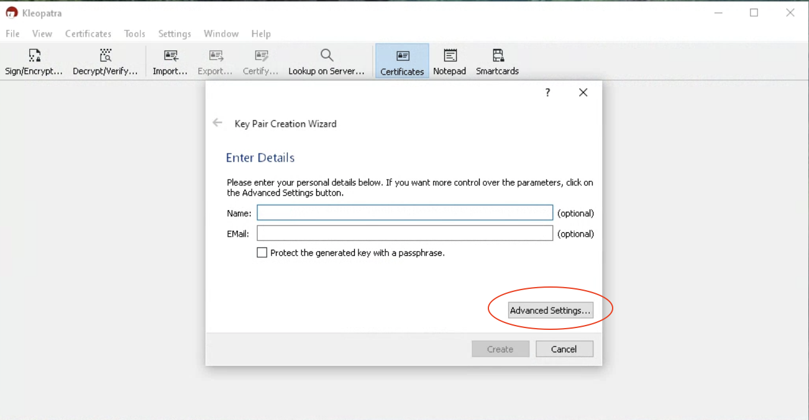
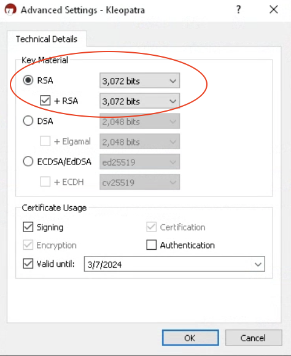
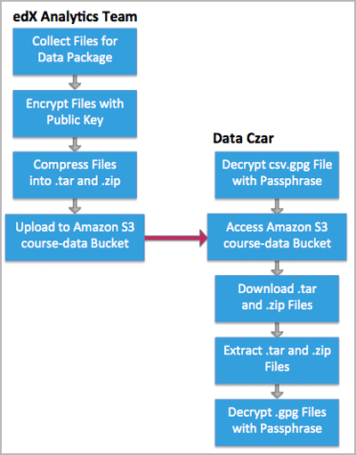
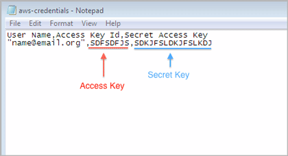

3.1. Keys and Credentials for Data Transfers#
EdX transfers course data to the data czars at our partner institutions in regularly generated data packages. Data packages can be accessed only by the data czar at each partner institution. This section describes how data czars can set up and use the credentials and public/private key pairs they need so that they can download and decrypt the edX data package.
3.1.1. Overview of Key Setup and Exchange#
The data czar who is selected at each institution sets up keys for securely transferring files from edX to the partner institution. Meanwhile, the Analytics team at edX sets up credentials so that the data czar can log in to the site where data packages are stored.

After these steps for setting up credentials are complete, the data czar can download data packages on an ongoing basis.
3.1.2. Data Czar: Create Keys for Encryption and Decryption#
To ensure the security of data packages, edX encrypts all files before making them available to a partner institution. As a result, when you receive a data package (or other files) from edX, you must decrypt the files that it contains before you use them.
The cryptographic processes of encrypting and decrypting data files require that you create a pair of keys: the public key in the pair, which you send to the edX Analytics team, is used to encrypt data. You use your corresponding private key to decrypt any files that have been encrypted with that public key.
To create the keys needed for this encryption and decryption process, you use GNU Privacy Guard (GnuPG or GPG). Essentially, you install a cryptographic application on your local computer and then supply your email address and a secret passphrase (a password).
Important
The email address that you supply when you create your keys must be your official email address at your edX partner institution.
After you specify the passphrase, be sure to take any steps necessary to assure that you can use it in the future. To minimize security risks, GPG does not provide a mechanism for supplying you with a reminder hint.
Do not reveal your passphrase to anyone else.
The result is the public key that you send to edX to use in encrypting data files for your institution, and the private key which you keep secret and use to decrypt the encrypted files that you receive. Creating these keys is a one- time process that you coordinate with your edX partner manager. Instructions for creating the keys on Windows or Macintosh follow.
For more information about GPG encryption and creating key pairs, see the Gpg4win Compendium.
3.1.2.1. Create Keys: Windows#
Go to the Gpg4win website and download the most recent version of Gpg4win.
Install Gpg4win and then open the Kleopatra Gpg4win application. A wizard presents a series of dialog boxes to collect information from you and generate your public key (called a certificate in Kleopatra).
When you are prompted to specify the type of key pair you want, select Create personal OpenPGP key pair.
When you are prompted for your email address, be sure to enter your official university or institution email address. EdX cannot use public keys that are based on personal or other non-official email addresses to encrypt data.
When you are prompted for a passphrase, enter a strong passphrase. Be sure to select a passphrase that you can remember, or use a secure method of retaining it for reuse in the future: you use this passphrase when you decrypt your data packages.
Change the default Key Material from ECDSA/EdDSA to RSA by clicking on the ‘Advanced Settings…’ button and then choosing RSA as the ‘Key Material’ as shown in the images below.
 
When Kleopatra presents the Key Pair Successfully Created dialog box, select Send Certificate by EMail to send the public key (and only the public key) to your edX partner manager.
Optionally, select Make a Backup Copy of Your Key Pair to store both of the keys on a removable data storage device.
Important
Do not reveal your passphrase, or share your private key, with anyone else. If you need another person to be able to transfer and decrypt files, work with edX to set her or him up as an additional data czar. Data czars must create and use their own passphrases.
3.1.2.2. Create Keys: Macintosh#
Go to the GPG Tools website. Scroll down to the GPG Suite section of the page and select Download GPG Suite.
When the download is complete, select the .dmg file to begin the installation.
When installation is complete, GPG Keychain Access opens a web page with First Steps and a dialog box.
Enter your name and email address. Be sure to enter your official university or institution email address. EdX cannot use public keys that are based on personal or other non-official email addresses to encrypt data.
Select Generate key. A dialog box opens to prompt you for a passphrase.
Enter a strong passphrase. Be sure to select a passphrase that you can remember, or use a secure method of retaining it for reuse in the future: you use this passphrase when you decrypt your data packages.
To send only your public key to your edX partner manager, select the key and then select Export. A dialog box opens.
Specify a file name and location to save the file. Make sure that Format is set to ASCII and that Allow secret key export is not selected.
When you select Save, only the public key is saved in the resulting
.ascfile. Do not share your private key with edX or any third party.Compose an email message to your edX partner manager. Attach the .asc file that you saved in the previous step to the message, then send the message.
3.1.3. EdX: Deliver Credentials for Accessing Data Storage#
The data packages that edX prepares for each partner organization are uploaded to the Amazon Web Service (AWS) Simple Storage Service (Amazon S3). The edX Analytics team creates an individual account to access this storage service for each data czar. The credentials for accessing this account are called an Access Key and a Secret Key.
After edX creates these access credentials for you, edX uses the public
encryption key that you sent your edX partner manager to encrypt the
credentials into a credentials.csv.gpg file. EdX then sends the file to you
as an email attachment.
The credentials.csv.gpg file is likely to be the first file that you decrypt with your private GPG key. You use the same process to decrypt the data package files that you retrieve from Amazon S3. See Decrypt an Encrypted File.

3.1.4. Decrypt an Encrypted File#
To work with an encrypted .gpg file, you use the same GNU Privacy Guard program that you used to create your public/private key pair.
To use your private key to decrypt the Amazon S3 credentials file and the files in your data packages, follow these steps.
Save the encrypted file in an accessible location.
On a Windows computer, open Windows Explorer. On a Macintosh, open Finder.
Navigate to the file and right-click it.
On a Windows computer, select Decrypt and verify, and then select Decrypt/Verify. Do not change any other setting.
On a Macintosh, select Services, and then select OpenPGP: Decrypt File.
Enter your passphrase. The GNU Privacy Guard program decrypts the file.
For example, when you decrypt the credentials.csv.gpg file the result is a credentials.csv file. Open the decrypted credentials.csv file to see that it contains your email address, your Access Key, and your Secret Key.

3.1.5. Use your Credentials to Access Amazon S3#
Once you have your decrypted credentials, you can use them to access Amazon S3 and download your data package.